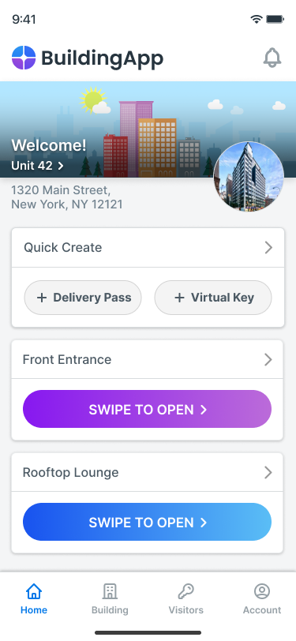
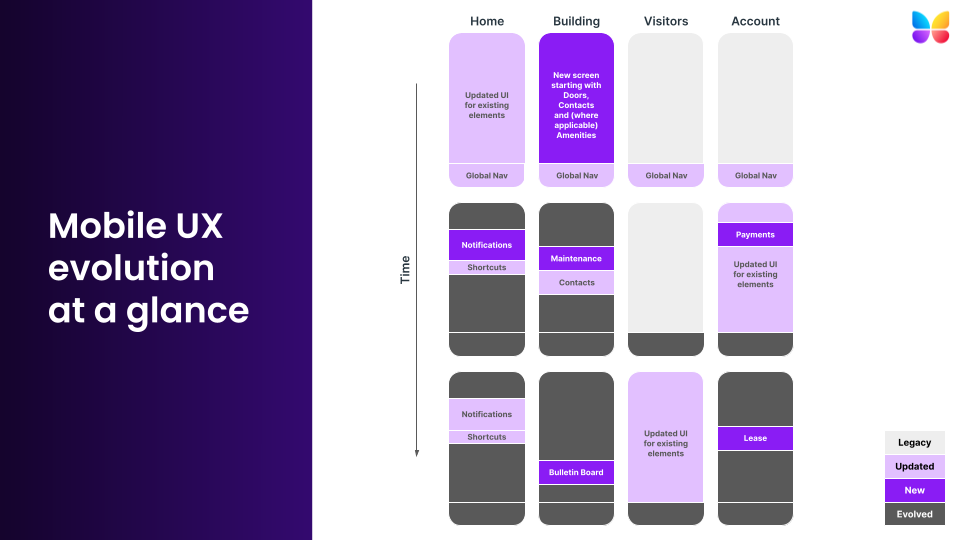
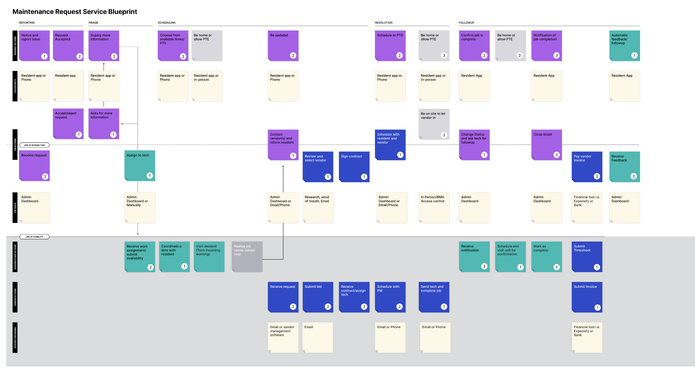
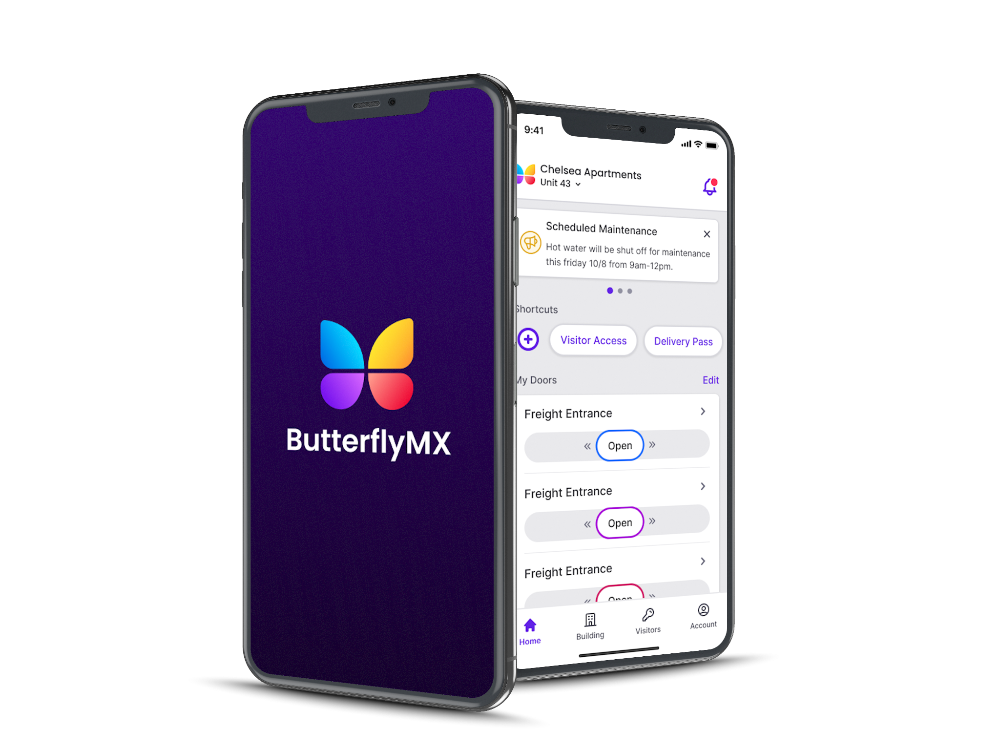
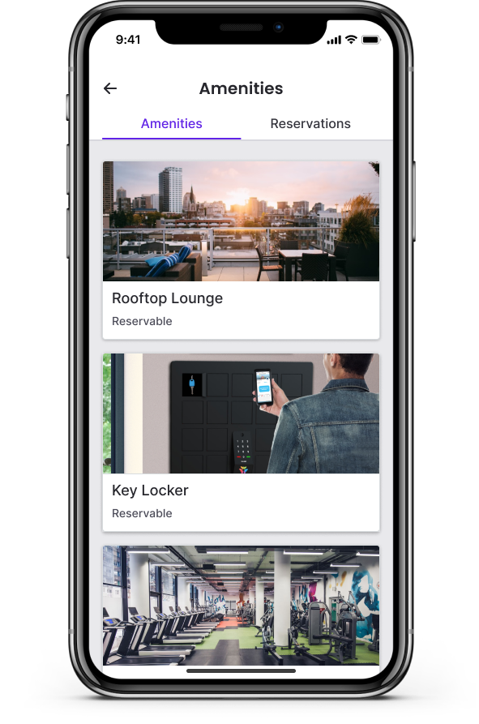

Outcomes first
The home-screen swipe-to-open interaction remains the app's core action pattern, and the cohesive system this work produced became embedded across all of ButterflyMX's products as it expanded into smart-home integrations and new verticals.
Try the working prototype A coded, swipeable rebuild of the resident app: home, doors, visitors, building, and account. Built by me, in code. Open prototype →Context
ButterflyMX connects residents to their buildings: see who's at the door, let them in, manage guest access. The app earned its ratings doing exactly that. But the roadmap wanted amenity reservations, maintenance requests, building notifications, rent payments, and support, and the app's architecture had no room for any of it. Bolting features onto a door-opener would have buried the one interaction people loved.
Winning the time to do it right
ButterflyMX was still new to formal research and discovery. Working closely with my PM, I drafted a plan that made the case to leadership in their terms: validate the direction before engineering commits, or pay for the rework later. Leadership approved nine weeks for a proof of concept, with engineering focused on other priorities, and gave us the room with no pushback. The deeper outcome of this project is that the process stuck.
Research
Competitive analysis, 8 products
Every resident-experience app we studied confirmed a few patterns: notifications are the highest-value common feature; the most valuable features connect resident and building through communication; guest access is a top need in secure buildings; and home screens prioritize high-frequency actions. Account sections were remarkably consistent: lease, payments, settings.
Card sorting, 6 sessions
I ran 45-minute card sorts with participants role-playing residents of a modern multifamily building, grouping feature cards into categories that made sense to them. Four themes emerged, in residents' own logic: access I control for myself and others; things I can do in my building; things I need to know about my building; things regarding my profile, payments, and preferences.
IA testing, 10 participants
Using UserZoom, we tested the proposed architecture with residents of multifamily buildings: where would you expect to find a guest pass, a maintenance request, your lease? Despite some technical hiccups, the majority of tasks passed, and the failures were instructive: access history mattered less than we assumed (nested into Account), arrival notifications mattered more, and a community bulletin board ranked low enough to deprioritize entirely.

The new architecture
The old navigation had five tabs (Home, Visitor Access, Account, Calls, Activity), two of which existed only because the system generated calls and events, not because residents thought that way. The new model has four, mapped to the research themes: Home for high-frequency actions, Building as the new growth surface (doors, contacts, amenities, maintenance), Visitor Access, and Account. Calls and activity became notifications, where residents expected them.

The point of the Building tab wasn't the features it launched with; it was the ones it could absorb later without another re-architecture. The service blueprint below maps how a maintenance request flows across resident, app, staff, and systems, the kind of artifact that kept new features landing coherently.

What shipped
The redesigned app rolled out with the new navigation, an elevated visual system, and the first Building-tab features, with amenity reservations leading. Quick actions and customization landed on Home, where research said residents wanted control.


Reflection
The architecture outlived my tenure, which is the outcome I value most. The IA and navigation still structure the live app, the swipe-to-open pattern is still the signature interaction, and the app kept its ratings while becoming a platform. The quieter legacy: this was the project that taught the company what research buys, and the discovery process it introduced became how product work got done.